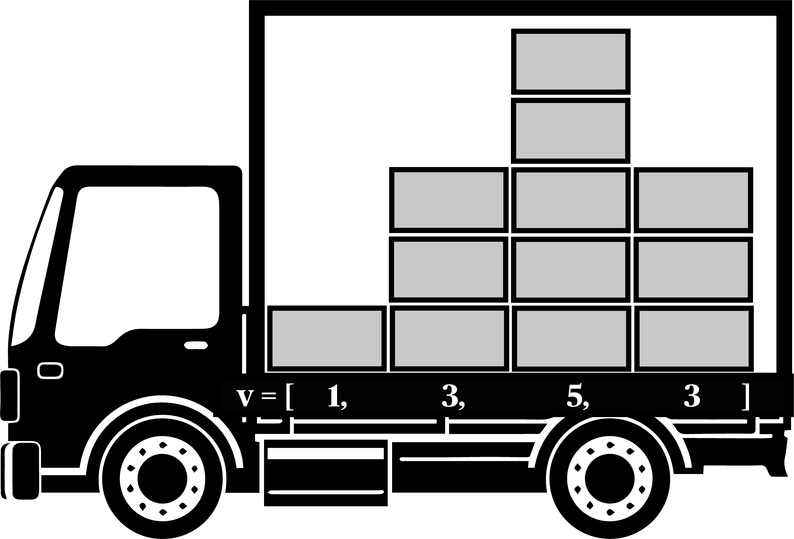
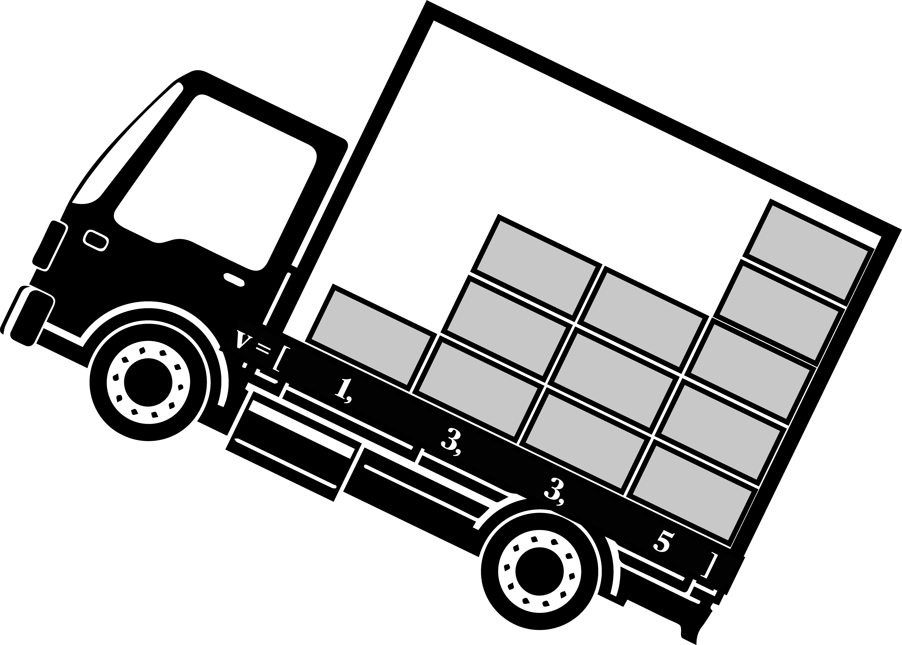
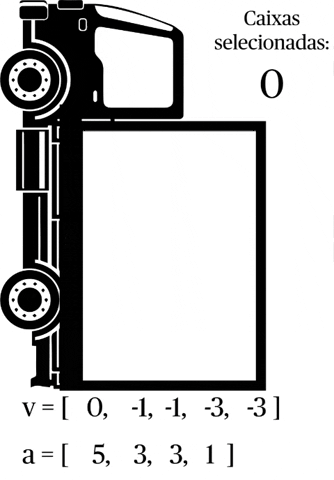

Gravity Sort
De volta à Natureza
Rozenberg desenhou o conceito que ficou conhecido como Computação Natural, que se trata de, a partir da observação de estruturas naturais, desenvolver estruturas computacionais.
O Gravity Sort faz parte de uma imensa gama de algoritmos com essas características, já que se baseia na força da gravidade para a sua concepção.
Ok, mas então vamos por fim apresentá-lo
Para entender a ideia podemos imaginar um caminhão carregado de caixa iguais, distribuídas em pilhas de diferentes alturas:

As pilhas tem altura diferentes, essas alturas são referentes à entrada do nosso algoritmo.
Agora imagine que o caminhão está subindo uma ladeira e que essas caixas deslizam em seu interior
PERGUNTA: Desenhe como ficarão as caixas nessa situação
Ao terminar pode prosseguir
continuar ou terminar

Sim, as caixas agora estão organizadas em pilhas crescentes, e adotaram essa composição depois de serem puxadas para traz pela gravidade...daí o nome Gravity Sort

Da mesma forma, se o caminhão estiver descendo a ladeira, as caixas se organizariam de forma decrescente
Inicialmente esse algoritmo foi pensado para ser demonstrado com um ábaco, onde, em inglês, os discos que o compõe são chamados de “bead”, então esse algoritmo também pode ser encontrado como Bead Sort.
Mas enfim, como podemos traduzir essa movimentação que a gravidade proporciona para um código de ordenação?
Implementação
Primeiro precisamos de um caminhão...
...mas calma, você não precisa criar um caminhão do zero, nos damos ele para você:
Passo 1: Preenchendo o caminhão :
def gravity_sort (lista_de_entrada):
# A função recebe uma lista de entrada,
# onde cada valor da lista representa o número de
# caixas presentes em cada pilha do caminhão.Dessa forma, se usarmos o exemplo inicial do caminhão, como uma lista de entrada, com os valores iguais as alturas das pilhas de caixas. Teremos o lista V=[1,3,5,3].
Passo 2: Primeiro loop -> Inclinando o caminhão:
A base da ideia do Gravity Sort é simular o efeito da gravidade, afim de se obter uma ordenação, tal como o exemplo do caminhão subindo a ladeira. Porém, computacionalmente, não é possível somente inclinar o vetor de entrada, como fizemos com o caminhão.
A solução encontrada é criar uma nova lista de zeros, com o tamanho igual ao maior valor da lista de entrada. Essa nova lista será nossa lista de acumulação.
def gravity_sort (lista_de_entrada):
lista_de_acumulacao = [0] * max(lista_de_entrada)
for num in lista_de_entrada:
for i in range(num):
lista_de_acumulacao[i] += 1
print(num,lista_de_acumulacao)Com a lista de acumulação, nosso algoritimo varre a lista de entrada e soma 1 a cada indice da lista de acumulação de acordo com a altura da pilha.
Por exemplo:
Vamos chamar a lista de entrada de V[] e a de acumulação de A[].
A[] é iniciada como A=[0,0,0,0,0]
V[0] = 1;
O algoritmo soma 1 ao primeiro indice de A[]
A = [1,0,0,0,0]
Para V[1] = 3;
O algoritmo soma 1 aos três primeiros indices de A[]
A = [2,1,1,0,0]
Após todas as interções, como ficará a lista de acumulação?
*Valide sua resposta
continuar ou terminar
A ideia seria a mesma que observar o caminhão a partir da sua traseira, como representado abaixo

Agora, com a lista de acumulação pronta, podemos obeter a ordenação da lista de entrada.
No mundo físico, bastaria voltar o caminhão a sua posição original, porém, novamente devemos contornar as limitações encontradas no ambiente computacional.
Passo 3: Segundo loop -> Contando as caixas:
Criaremos uma nova lista, será igual a lista de entrada, só que ordenada, chamaremos essa nova lista de lista de retorno.
A partir da lista de acumulação, se subtrairmos 1 de cada indice, e somarmos a cada indice da lista de retorno, teremos os valores da lista de entrada ordenados.
Por exemplo:
Vamos chamar a lista de acumulação de A[] e a de retorno de R[].
A = [4,3,3,1,1]
Se subtraírmos 1 de cada um dos indices:
A = [3,2,2,0,0]
R[] receberá a soma dos 1s que foram retirados, somente de valores maiores que zero.
R = [5]
Continuaremos o processo até que todos os indices de A[] sejam <=0
Continue o processo, simulando como R[] e A[] se comportarão até o fim do processo.
*Valide sua resposta.
continuar ou terminar
Novamente, podemos voltar a ideia do caminhão, retirando uma caixa da cada pilha do vetor de acumulação.

Para isso, faremos um segundo loop, que será responsável por preencher a lista de retorno como no exemplo acima.
def gravity_sort(lista_de_entrada):
lista_de_retorno = []
lista_de_acumulacao = [0] * max(lista_de_entrada)
for num in lista_de_entrada:
for i in range(num):
lista_de_acumulacao[i] += 1
print(num,lista_de_acumulacao)
/*
loop 2 aqui
*/Se você ja entendeu a ideia por trás do funcionamento do Gravity Sort, você conseguiria implementar o segundo loop?
Implemente o segundo loop.
*Não precisa validar, mas é importante tentar antes de prosseguir.
continuar ou terminar
Com a implementação do segundo loop, já temos nosso código completo.
def gravity_sort_traduzido(lista_de_entrada):
lista_de_retorno = []
lista_de_acumulacao = [0] * max(lista_de_entrada)
for num in lista_de_entrada:
for i in range(num):
lista_de_acumulacao[i] += 1
for _ in lista_de_entrada:
sum = 0
for n in lista_de_acumulacao:
if(n > 0):
sum += 1
lista_de_retorno.append(sum)
for n,elem in enumerate(lista_de_acumulacao):
lista_de_acumulacao[n] -= 1
return lista_de_retornoUm detalhe interessante no segundo loop é o check de n > 0, pode ter passado despercebido por alguns, então vale a pena observa-lo, esse chek so existe pois estamos trabalhando com um sistema inspirado no mundo físico, logo, quando n chega zero, significa que não há mais caixas na pilha. Apesar do loop continuar subtraindo uma caixa de cada andar, apenas os números positivos são considerados na contagem.
Apesar de ser um algoritmo bem interessante, ele possui algumas limitações, que podem ser comparadas até com a sua inspiração do mundo real.
Da mesma forma que a caixa precisa ser dotada de massa para sofrer a ação da gravidade, o Gravity Sort necessita que os numeros de entrada sejam positivos. Mas ainda assim é possível trabalhar com numeros negativos com esse algoritimo
Você consegue pensar em um estratétgia para escapar dessa limitação?
*Continue ao chegar em uma conclusão com seu grupo.
continuar ou terminar
Sim, se fizermos uma transformação somando os números negativos por um offset para que até mesmo o menor deles fique positivo, trabalharmos com o Gravity Sort e depois "desconverter" esses números usando esse mesmo offset, conseguiremos o que queremos!
Complexidade
Agora que temos a ideia do Gravity Sort, e sua implementação, podemos falar sobre a complexidade deste algoritmo.
Nessa implementação, temos dois loops. Vamos analisá-los separadamente:
O primeiro loop:
for num in lista_de_entrada:
for i in range(num):
lista_de_acumulacao[i] += 1Qual a complexidade desse loop?
*Lembre-se da relação existente entre a lista de entrada e o tamanho da lista de acumulação.
**Lembre-se o que o n de O(n) significa.
***Valide sua resposta.
continuar ou terminar
Esse loop tem seu número de execuções igual à soma de todos os valores na lista de entrada. Podemos dizer que é um O(s), onde s representa essa soma de valores;
No segundo loop:
for _ in lista_de_entrada:
sum = 0
for n in lista_de_acumulacao:
if(n > 0):
sum += 1
lista_de_retorno.append(sum)
for n,elem in enumerate(lista_de_acumulacao):
lista_de_acumulacao[n] -= 1Qual é a complexidade para o segundo loop?
*Valide sua resposta
continuar ou terminar
Temos esse loop, com outros dois loops dentro. Vamos chamá-los de loop a e loop b, respectivamente.
O loop a tem uma complexidade O(n(max_num)), já que é executado n vezes para o tamanho da lista_de_acumulacao, que sabemos que é igual ao maior valor de entrada.
Para o loop b, temos um situação semelhante ao primeiro, em que é O(n(max_num)). Portanto, para o segundo loop, temos uma complexidade O(2n*num_max).
Qual a complexidade do algoritmo como um todo?
*Tente unir as duas deduções anteriores.
**Valide sua resposta.
continuar ou terminar
Para o algoritmo completo temos uma complexidade igual a O(s+2n*max_num).
É possível simplificar essa complexidade para O(n*max_num), já que a soma e a multiplicação de constantes não afetam o tempo de processamento. Porém não podemos desprezar o termo max_num, onde para uma entrada pequena com grandes valores, a lista de acumulação se torna automaticamente grande, o que eleva o tempo de processamento.
Fim do handout.